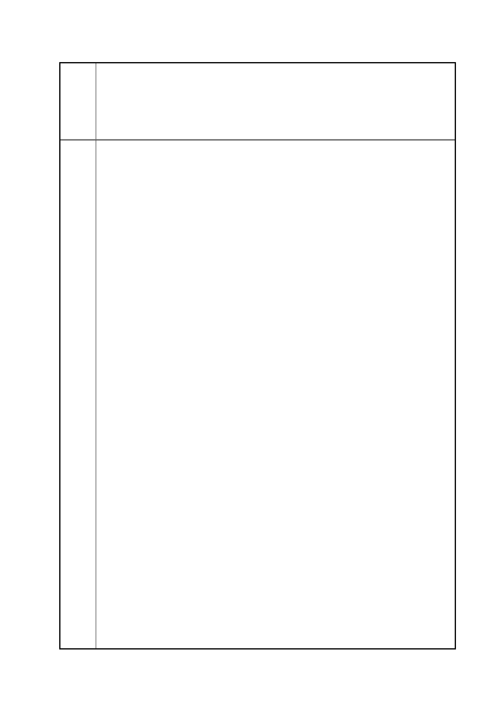

臺北市都市計畫委員會 公民或團體陳情意見綜理表
「變更臺北市信義區逸仙段二小段 33 地號等 21 筆土地（原臺北機廠）
案
名
工業區為創意文化專用區、特定專用區、道路及綠地用地主要計畫案」
及「擬定臺北市信義區逸仙段二小段 33 地號等 21 筆土地（原臺北機
廠）創意文化專用區、特定專用區、道路及綠地用地細部計畫暨劃定
都市更新地區計畫案」
司修復古蹟的 20 億經費是怎麼算出來的？
3. 臺北機廠是臺鐵局接收日據時代的產物，我相信沒有取得成本的
問題，以德國紐倫堡的德國鐵路博物館，或英國約克的國家鐵路
博物館鐵路為例，鐵道博物館本身相較於其他種類的博物館，較
容易回收。臺北機廠既然沒有土地取得成本，在這裡繼續展示火
車，或是一定程度的提供餐飲，或是開些模型店，我相信較能維
護地方居民的生活品質，而臺鐵仍可獲得相關的收益。
4. 102 年 12 月 12 日立法院教育委員會鄭麗君委員提決議案要求文
化部去協調交通部，在一個月內舉辦公聽會，就我所知，立法院
交通委員會的李昆澤委員和管碧玲委員也都是共同提案人，如果
有那麼多立法委員，不管是教育文化的委員，或者是交通的委
員，都已經明確表達希望本案事緩則圓，那現在這邊辦這場說明
會，一來其實是浪費大家的時間，二來其實是浪費政府機關相關
的業務經費，政府施政政府必須是一體，在 103 年 1 月 13 日文
化部舉辦公聽會之前，市政府幫臺鐵做的這些東西都沒有任何意
義。
李議員慶鋒
1. 重大的開發案件都要傾聽民意，站在臺鐵局的立場，大概是要籌
措財源，彌補虧損；站在公民團體和臺北市政府的立場，這個空
間使用是不是符合我們公共利益？是不是符合生活需求？是不
是都市發展未來的需要？我想才是大家重視的。
2. 全區的考量有沒有可能做低密度的開發？有沒有可能全區保
留？把原本屬於臺鐵局可以籌措財源的容積轉移到其他地方
去？
3. 特定專用區看起來沒有特別的目的，就是要籌錢。臺鐵委託顧問
公司做規劃，這個區域裡面的容積、住宅或商務辦公室，未來籌
措財源時可以替臺鐵局籌多少錢？那對於附近的房價，或者是環
境影響是多少？我想應該納入考量。
4. 創意文化園區的部分，本來就是為了保留鐵道文化，可是現在出
現一個第二美術館，不只是臺鐵的委託案還沒有結案，市政府對
於到底要不要做第二美術館，文化局正在委託研究，其實也還沒
有決定。但細部計畫裡面就編了第二美術館的開闢費用，請問這
38 億元是怎麼估算出來的？我主張這個案子暫緩送進都市計畫
第 133 頁/共 154 頁